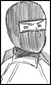

|
金沢のと（かなざわのと） 化学工学科一年
出身地：石川県羽咋市 身長159cm 7月7日生まれ
好きなものはままどおると伊達巻卵
振り回されっぱなしの不憫な新入生。
実力はあるみたいだけど、こんな放送部のせいか
なかなか発揮できない。
時々たまりすぎて爆発することも…。
|
|  |
赤福すずか（あかふくすずか） 電気科三年
出身地：三重県伊勢市（育ちは伊賀） 身長178cm 10月30日生まれ
好きなものは豆腐田楽
ニーニー（忍者語だそうで）しか言えない放送部部長。
見た目と言葉以外は結構まとも？な兄貴分。
殴られてもへし折られても、いつの間にか復活している。
飼い犬の名前はポチルアンジェリカ。 |
|
諫早はとば（いさはやはとば） 建築科三年
出身地：長崎県佐世保市 身長182cm 12月3日生まれ
好きなものはしいていうならトルコライス。あとすこんぶ。
きたこーの裏ボス。超無口で何考えてるか分からない。
中華料理屋で住み込みで働いてる。
趣味はひなじいじり。
猫大好き。だけどネーミングセンスが超適当。 |
|
津軽凛子（つがるりんこ） 環境システム科二年
出身地：青森県津軽市 身長155cm 11月26日生まれ
好きなものは林檎、棒パン、じゃっぱ汁。
津軽なまりののほほん少女。
ちょっと引っ込み思案で押しが弱すぎる性格なので
戦隊物の強いヒーローにあこがれてる。
趣味は農作業と料理。おにいちゃんこ。 |
|
春日部雛路（かすかべひなじ） 情報処理科
出身地：埼玉県秩父郡 身長164cm 4月7日生まれ
好きなものは、おでん缶。サツマイモソフト。
埼玉が生んだ最強サイバー少年。
昔はデブでオタクで根暗だったが、見事高校デビューを果たし
現在は隠れオタで通している。けど全然隠し切れていない。
顔はかっこいいが、リアクションがでかいのでいじられ役。
のととの一件で何かが吹っ切れてしまった様子。 |
|
オニョ・J・カデュオ（おにょじぇいかでゅお） 化学工学科1年担任
出身地：地球かも謎 体長９０cmくらい
すきなものはおしり
放送部担任の不思議な先生。おちりが大好きで見ると元気出す。
性格は明るい方だが、テンションが日によって違いすぎる。
いも煮会で鍋に入れられたりした。 |
|
尾張美弥子（おわりみやこ） 生徒会長
出身地：愛知県犬山市 身長１６２cm
8月６日生まれ
好きな物はひつまぶし、味噌がかかったもの全般。
豪快でちょっとわがままなごきたこーの名物女生徒会長。
ギャルっぽい見た目なのに骨の髄まで腐ってる。
部長とボスとは腐れ縁。自分の欲望には素直。
どこかの生徒会長と違って仕事は結構きっちりやってるみたい。 |
|
富山入善（とやまいりよし） 化学工学科1年
出身地：富山県 身長１77cm
好きな物はスイカ、ます寿しなど。
のとの幼馴染で困った時に頼れる親友。
変な部活に入ってしまったのとを心の底から心配している。
特に雛路のことは超不信がっている。
とある事情からのとを一度も家に呼んだことはない。
|